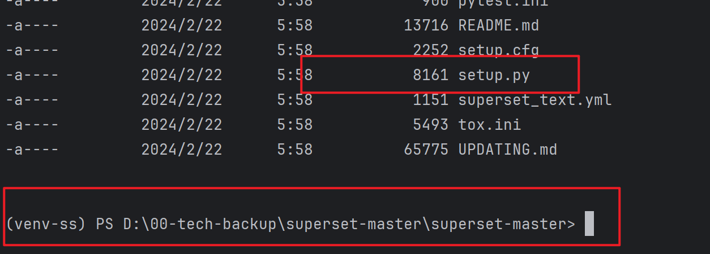
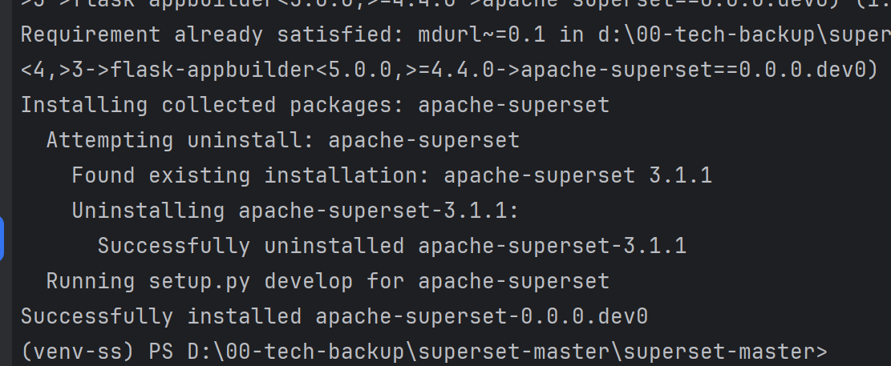
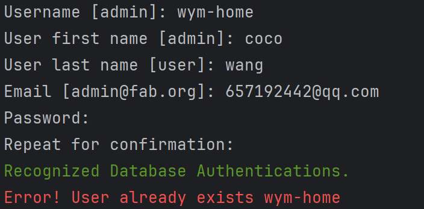
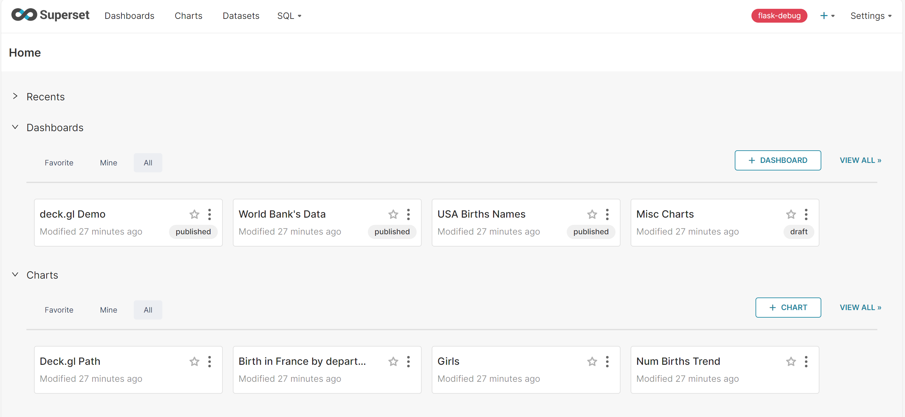
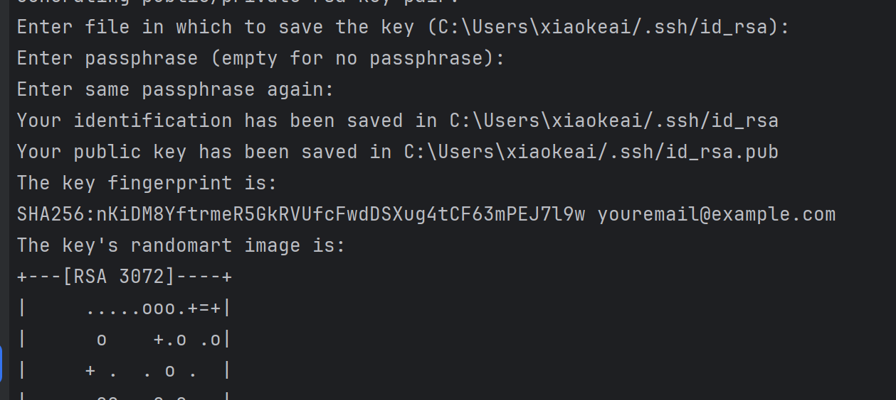

开发环境搭建
superset.apache.org/docs/instal… 安装 python 环境 安装最新版即可，最新版 python 自带 pip 打包管理工具，安装时需要将 python 添加到 path 中。 下载 superset 源码 github.com/apache/supe… 下载 master zip 即可。 部署 python 虚拟环境
命令最好使用 cmd，bash 创建用户时有问题。
js复制代码pip install virtualenv
js复制代码virtualenv env
js复制代码env\Scripts\activate
安装、初始化 superset 解压之前下载的 superset 源码，进入到源码目录。 设置 pip 国内源地址。 js复制代码pip config set global.index-url https://pypi.tuna.tsinghua.edu.cn/simple
安装 superset 本地测试依赖 js复制代码pip install -e .
安装 apache-superset js复制代码pip install apache-superset
初始化数据库 js复制代码superset db upgrade
创建用户并初始化配置 js复制代码superset fab create-admin
superset load_examples // 下载 superset 案例，需要安全上网
superset init
启动 superset server js复制代码superset run -p 3000 --with-threads --reload --debugger
这时访问地址，会发现没有资源。 前端项目配置 安装项目依赖 js复制代码cd superset-frontend
npm install
修改 webpack 配置
js复制代码{
test: /.jsx?$/,
// include source code for plugins, but exclude node_modules and test files within them
exclude: [/superset-ui.\/node_modules\//, /.test.jsx?$/],
include: [
new RegExp(${APP_DIR}/src),
/superset-ui.\/src/,
new RegExp(${APP_DIR}/.storybook),
path.resolve(__dirname, 'src'), // 添加本行代码，对 windows 环境不友好
],
use: [babelLoader],
}
运行项目 js复制代码npm run dev
作者：heora 链接：https://juejin.cn/post/6991730150203195400 来源：稀土掘金 著作权归作者所有。商业转载请联系作者获得授权，非商业转载请注明出处。
创建管理用户及密码
$ export FLASK_APP=superset flask fab create-admin 或者 fabmanager create-admin --app superset
初始化数据库
superset db upgrade
初始化角色和权限
superset init
加载示例数据
superset load_examples superset load_examples
debug模式启动，并指定8088端口
superset run -p 8088 --with-threads --reload --debugger
前端的安装，cd incubator-superset\superset-frontend(superset前端模块)：
安装npm 执行 npm install，网络不好的可以使用镜像 registry=https://registry.npm.taobao.org 执行npm run dev启动前端
从本地启动superset后端， 官网使用的是python superset run -p 8088 --with-threads --reload --debugger,但我试了一下，这样会报can't find 'main' module，看了下代码，这里不能从main启动，应该从flask-app来启动，因此直接执行flask run来本地启动superset后端
作者：coffeeBean 链接：https://juejin.cn/post/6844904097921892359 来源：稀土掘金 著作权归作者所有。商业转载请联系作者获得授权，非商业转载请注明出处。
本地开发环境部署
Create a virtual environment and activate it (recommended)
python3 -m venv venv # setup a python3 virtualenv source venv/bin/activate
Install external dependencies
pip install -r requirements/testing.txt
重装apache-supers,注意当前目录是wheels文件的目录，但是虚拟环境都是同一个
pip install --force-reinstall --no-index --find-links=. .\apache-superset-3.1.1.tar.gz
注意开发环境不需要设置环境变量FLASK_APP
Install Superset in editable (development) mode， 注意此时的目录需要切换到源码superset-master的根目录下，存在neither 'setup.py' nor 'pyproject.toml' found文件的目录
 cd superset-master pip install -e . 
Initialize the database
Note: For generating a SECRET_KEY if you haven't done already, you can use the command:
echo "SECRET_KEY='$(openssl rand -base64 42)'" | tee -a superset_config.py
superset db upgrade
Create an admin user in your metadata database (use admin as username to be able to load the examples)
superset fab create-admin  如果存在就不用重新再创建，直接使用当前的用户密码登录就可以了。貌似是根据邮箱来识别唯一用户的。
Create default roles and permissions
superset init
Load some data to play with.
Note: you MUST have previously created an admin user with the username admin for this command to work.
superset load-examples
cd superset-frontend
设置npm国内淘宝源
npm --registry=http://registry.npm.taobao.org install -d）
npm ci
npm run dev
Start the Flask dev web server from inside your virtualenv.
Note that your page may not have CSS at this point.
superset run -p 8088 --with-threads --reload --debugger 
mkdocs
pip install mkdocs mkdocs new 2024-docs mkdocs serve - 安装主题 https://github.com/squidfunk/mkdocs-material - pip install mkdocs-material - Add the following lines to mkdocs.yml: - theme: name: material - demo usage: https://squidfunk.github.io/mkdocs-material/ - demo how to do:https://squidfunk.github.io/mkdocs-material/creating-your-site/ - npm 离线安装 - npm install -g npm-pack-all npm ci - npm build - npm run build - 最终 终于可以跑起来了，你需要开两个终端一个跑前端，一个跑后端：
npm run dev 如果希望使用PyCharm进行开发，需要将$SUPERSET_HOME/superset/assets目录下面的node_modules目录标记为Exincluded(在node_modules目录上面右击Mark Directory as...)。其次需要配置PyCharm的Run/Debug Configurations中的Script和Script parameters:
Script: /path/to/user/incubator-superset/superset/bin/superset
-
- 什么是 NPM NPM 的全称是 Node Package Manager，是 Node.js 官方提供的包管理工具，他已经成了 Node.js 包的标准发布平台，用于 Node.js 包的发布、传播、依赖控制。
-
如何使用 NPM npm 不需要单独安装。在安装 Node 的时候，会连带一起安装 npm 。但 Node 附带的 npm 可能不是最新版本，最后用下面的命令，更新到最新版本。
$ sudo npm install npm@latest -g # Linux 命令 npm install npm -g # Window 系统使用这个命令
也就是使用 npm 安装自己。之所以可以这样，是因为 npm 本身与 Node 的其他模块没有区别。
$ npm help # 查看 npm 命令列表 $ npm -l # 查看各个命令的简单用法 $ npm -v # 查看 npm 的版本 $ npm config list -l # 查看 npm 的配置
常用命令 npm version 查看 npm 和 node 的版本 npm list --depth=0 [-g] 查看[全局]安装的包 npm root [-g] 查看[全局的]包的安装路径 3. npm init 初始化 package.json 文件 npm init 用来初始化生成一个新的 package.json 文件，安装包的信息可保持到项目中，它会向用户提问一系列问题，以便后续的其它的项目开发或者他人合作使用。如果你觉得不用修改默认配置，一路回车就可以了。如果使用了 -f（代表force）、-y（代表yes），则跳过提问阶段，直接生成一个新的 package.json 文件。
用法： npm init [-f|--force|-y|--yes] $ npm init -y 4. package.json package.json 是在运行 “ npm init ”时生成的，主要记录项目依赖，有以下结构
name：项目名，也就是在使用npm init 初始化时取的名字，但是如果使用的是npm init -y 快速初始化的话，那这里的名字就是默认存放这个文件的文件名； version：版本号； private：希不希望授权别人以任何形式使用私有包或未发布的； scripts-serve：是vue的项目启动简写配置； scripts-build：是vue的打包操作简写配置； dependencies：指定了项目运行时所依赖的模块； devDependencies：指定项目开发时所需要的模块，也就是在项目开发时才用得上，一旦项目打包上线了，就将移除这里的第三方模块；
-
package-lock.json package-lock.json 是在运行 “npm install” 时生成的一个文件，只单纯记录本项目的依赖, 而没有记录下依赖的依赖, 并且依赖之间的版本号又没有明确固定, 导致无法保证依赖环境一致，进而导致项目出现bug。而package-lock.json就是用来lock住项目依赖的依赖以保证其他所有人人在使用 npm install 时下载的依赖包都是一致的。
-
package.json 和 package-lock.json总结 package.json用于告诉npm项目运行需要哪些包, 但包的最终安装的版本不能够只依靠这个文件进行识别, 还需以package-lock.json为准。package.json中修改版本号会影响package-lock.json, 并且package.json比package.lock.json的优先级高, 如果package.json中less版本为^1.0.0 , package-lock.json中less版本为2.1.2, 则最终安装的less版本为1.7.5, package-lock.json中less即其依赖的包将被从2.1.2退回到1.7.5`的状态。为了保证该项目的环境依赖一致, 在项目移动时需要同时复制 package.json 和 package.lock.json 两个文件。不要轻易动package.json与package-lock.json。 ————————————————
版权声明：本文为博主原创文章，遵循 CC 4.0 BY-SA 版权协议，转载请附上原文出处链接和本声明。
原文链接：https://blog.csdn.net/weixin_40521770/article/details/129545865
pycharm中使用git push到github提示没有权限
git@github.com: Permission denied (publickey). fatal: Could not read from remote repository. Please make sure you have the correct access rights and the repository exists.
- ssh-keygen -t rsa -C "youremail@example.com"  一路回车，不用输入秘钥
- 去路径下打开.pub文件
- https://blog.csdn.net/W_317/article/details/106518894
- 19:27:43.794: [..\2024-docs] git -c credential.helper= -c core.quotepath=false -c log.showSignature=false push --progress --porcelain master refs/heads/master:refs/heads/master --set-upstream --follow-tags error: failed to push some refs to 'github.com:duniang818/duniang818.github.io.git' To github.com:duniang818/duniang818.github.io.git hint: Updates were rejected because the remote contains work that you do not ! refs/heads/master:refs/heads/master [rejected] (fetch first) hint: have locally. This is usually caused by another repository pushing to hint: the same ref. If you want to integrate the remote changes, use Done hint: 'git pull' before pushing again. hint: See the 'Note about fast-forwards' in 'git push --help' for details.
- 清理缓存 git config --system --unset core.packedGitLimit git config --system --unset core.packedGitWindowSize git config --system --unset core.compression git config --system --unset core.deltaBaseCacheLimit